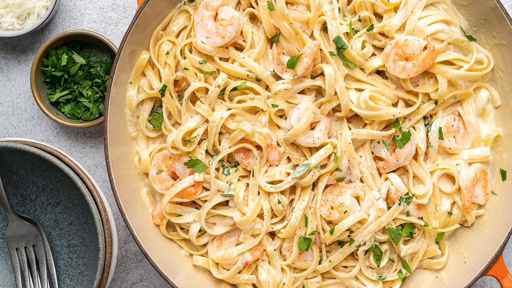

Shrimp Fettuccine Alfredo

Description
A delicious Italian sauce combined with fettuccine noodles and shrimp.
The sauce consists of heavy half-and-half that is mixed with butter, grated Parmesan cheese, garlic, and parsley to create a rich Italian meal.
Ingredients
- 1 pound fettuccini pasta
- 1 tablespoon butter
- 1 pound cooked shrimp - peeled and deveined
- 4 cloves garlic, minced
- 1 cup half-and-half
- 6 tablespoons grated Parmesan cheese
- 1 tablespoon chopped fresh parsley
- salt to taste
Directions
- Bring a large pot of lightly salted water to a boil.
- Add pasta and cook for 8 to 10 minutes or until al dente; drain.
- Separately, in a large skillet, cook and stir shrimp and garlic in the butter for one minute.
- Pour in half and half; stir until mixed.
- Sprinkle Parmesan cheese in, one tablespoon at a time, stirring constantly. After all Parmesan is added, mix in parsley and salt. Stir frequently making sure it does not boil. Sauce will take a while to thicken.
- When sauce has thickened, combine with cooked pasta noodles; serve hot.
Return to Recipes